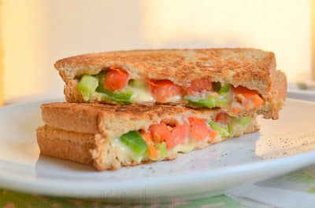

Mixed vegitabel Cheese Sandwich

Description
Mixed Vegetable and Cheese Sandwich is a must try sandwich recipe. It is a healthy breakfast recipe that you can
try during the weekneds or pack for lunch during the weekdays.
Ingrediants
- 6 bread- brown
- 1 medium finely chopped tomato
- 1 medium thinly sliced onion
- 1/2 pinch salt
- 1 medium finely chopped cucumber
- 3 slices cheese slices
- 1 medium finely chopped carrot
- 1/4 teaspoon spice black pepper
- 2 teaspoon butter
Steps
- Take chopped mixed vegetables in a bowl and add in salt & pepper.
- Toss and assemble by placing a cheese slice on a bread slice and spreading 2-3 table spoons of mixed
vegetables on it and covering it with another bread slice.
- Add little butter to a pan and toast the sandwich until it turns crisp on both the sides. Serve warm.